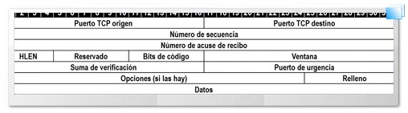
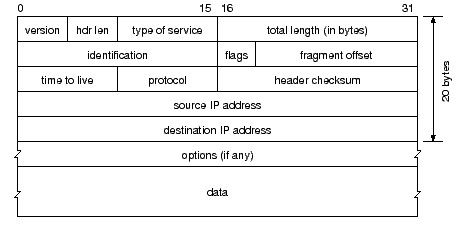

GLOSARIO
Indice:
HTTP y redes
- Internet
- Creacion: Los inicios de Internet nos remontan a los años 60. En plena guerra fría, Estados Unidos crea una red exclusivamente militar, con el objetivo de que, en el hipotético caso de un ataque ruso, se pudiera tener acceso a la información militar desde cualquier punto del país. Esta red se creó en 1969 y se llamó ARPANET.
- Concepto: Red informática de nivel mundial que utiliza la línea telefónica para transmitir la información.
- Funcionamiento: Es una red informática descentralizada, que para permitir la conexión entre computadoras opera a través de un protocolo de comunicaciones (TCP/IP). Garantiza que las redes físicas heterogéneas que la componen constituyan una red lógica única de alcance mundial.
- Protocolo
- Concepto: El protocolo son las reglas de comunicación entre dos máquinas.
- Tipos:
- Orientado a la conexión.
- No orientado a la conexión.
- RFC: Request For Comments (Peticiones de comentarios).
- Niveles ISO-OSI
- Físico: Conexion de equipos.
- Enlace: Deteccion de errores.
- Red: Enrutamiento de los mensajes.
- Transporte: Integridad de los mensajes.
- Sesión: Dialogos de control.
- Presentacion: Interpretacion de los datos.
- Aplicacion: Datos normalizados.
- Protocolo HTTP
- Concepto, utilidad, caracteristicas:
- Concepto: Protocolo de acceso para las páginas web a través de Internet.
- Utilidad: Nos permite realizar una petición de datos y recursos.
- Caracteristicas:
- Sencillo a la hora de ser interpretado por las personas.
- Es extensible: Las cabeceras de este protocolo han hecho que sea fácil de ampliar y de experimentar con él.
- Es un protocolo sin estado: No guarda ningún dato entre dos peticiones en la misma sesión.
- No es necesaria una conexión continua. Con que el protocolo detecte que se ha pedido un mensaje y reporte un error sería más que suficiente.
- Estructura de un paquete HTTP de peticion y de respuesta:
- Petición:
- Línea de petición.
- Cabecera.
- Cuerpo.
- Respuesta:
- Línea de estatus.
- Cabecera.
- Cuerpo.
- Metodos HTTP y su utilidad:
- GET: se utiliza para leer contenidos.
- POST: se utiliza para crear contenidos.
- PUT: se utiliza para actualizar contenidos pero también para crearlos.
- DELETE: se utiliza para eliminar contenidos.
- HEAD: es idéntico a GET. Sirve para leer contenidos. Con este método también se puede comprobar si el documento ha sido modificado o si el documento existe.
- Proceso de cargade una pagina web:
- Primero, se escribe en el navegador una URL la cual el ordenador no entiende. Por lo que se envía una petición al DNS (proporcionado por la compañía de red), el cual resuelve esa URL devolviéndola como dirección IP al ordenador desde el cual se ha realizado la búsqueda. Con esto, el ordenador ya puede hacer la búsqueda de la API a través del servidor web correspondiente (en este caso Internet). Una vez localizada, busca en su base de datos la página web que corresponde a la URL introducida. Finalmente el propio API devuelve el resultado al navegador.
- TCP(Protocolo de Control de Transmision)
- Concepto: Conjunto de protocolos que permiten la comunicación entre dos ordenadores pertenecientes a una red.
- Utilidad: Se encarga de crear “conexiones” entre sí para que se cree un flujo de datos. Garantiza que los datos sean entregados en destino sin errores y en el mismo orden en el que salieron. También se utiliza para distinguir diferentes aplicaciones en un mismo dispositivo.
- Puertos bien conocidos: Los puertos bien conocidos son desde el 0 hasta el 1023. Nosotros hablaremos del puerto 80 ya que nuestro protocolo es http.
- Estructura de los segmentos TCP: 
- Puerto TCP origen y puerto TCP destino.
- Número de secuencia del primer byte que transporta el segmento.
- Numero de acuse de recibo: Contiene información valida. Un segmento puede transportar datos de un sentido y las confirmaciones del otro sentido de la comunicación.
- HLEN: Longitud de la cabecera.
- Reservado: Bits reservados para un posible futuro.
- Bits de código: Determinan el propósito y contenido del segmento.
- Suma de verificacion: Total de comprobaciones de errores del segmento actual.
- Ventana: Numero de bytes que el emisor del segmento acepta por parte del destino.
- Puerto de urgencia: Se utiliza si se envían datos que tienen preferencia sobre todos los demás.
- Relleno: Sirve para que la longitud de la cabecera sea múltiplo de 32 bits.
- Datos: Información que envía la aplicación.
- Sockets:
- Método para la comunicación entre un programa del cliente y un programa el servidor en una red.
- Sirven de punto final en una conexión.
- IP (Protocolo de Internet)
- Concepto: Conjunto de números que identifica, de manera lógica y jerárquica, a una interfaz de la red.
- Utilidad: Se encarga del envío y recepción de datos en bloques. (El envío lo hace siempre por la mejor ruta pero sin garantizar que llegue a alcanzar el destino).
- Direcciones IP: dirección inequívoca de un dispositivo en una red interna o externa. Cada dirección IP solo puede asignarse una vez al mismo tiempo.
- Enrutamiento: permite interconectar o comunicar redes, a través de paquetes IP enviados desde un origen a un destino, mediante un router.
- Estructura de los diagramas IP: 
- Version: Version del protocolo.
- Hrd len: Longitud de la cabecera IP contada en cantidades de 32 bits.
- Type of service: Indica la cantidad del servicio solicitado para el datagrama IP.
- Identification: Numero unico que asigna el emisor y que ayuda si wl datagrama IP estuviera fragmentado.
- Time to live: Tiempo predeterminado para viajar.
- Protocol: Numero oficial del protocolo.
- Total length (bytes): Longitud total del datagrama, cabecera y datos.
- Flags: Controlan la fragmentacion.
- Fragment offset: Sirve para datagramas fragmentados ya que ayuda a reensamlarlos.
- Header checksum: Es el checksum de la cabecera. Sirve para identificar si el datagrama ha llegado al destino correspondiente.
- Source IP adress: Direccion IP (32 bits) Del host receptor.
- Options (if any): Campo de longitud variable. Sirve para pruebas de red o depuracion.
- Data: La información a comunicar del datagrama.
- URL
- Concepto: Significa Localizador Uniforme de Recursos. Es la dirección específica que se asigna a cada uno de los recursos disponibles en la red con la finalidad de que estos puedan ser localizados o identificados.
- Estructura: Protocolo://servidor:puerto/ruta/archivo
- Parametros: Constan de una clave y un valor separados por un = y unidos por & El parámetro siempre va después de un “?“
- Aplicaciones cliente-servidor vs P2P
- Cliente-servidor: Un cliente realiza una petición y un servidor responde.
- P2P: Es una red de nodos que se comportan simultáneamente clientes y servidores.
- ¿Qué es una cookie y para que sirve? ¿Cómo podemos establecer una sesion usando? ¿Dónde viaja la cookie dentro del paquete HTTP?
- Que es y para que sirve: Es un paquete de datos enviado desde el servidor web. Y sirve para almacenar la sesión de un sitio web y así adaptar el contenido de ese sitio al usuario con esa cookie.
- Como establecer una sesion: Haciendo que la cookie acceda a la ruta del dominio que ha iniciado la sesión.
- Donde viaja: Viaja dentro de un encabezado HTTP Cookie o en un encabezado HTTP Set-Cookie.
- ¿Qué son los tipos MIME y para que sirven?
- Concepto: Es una manera de mandar contenido a través de la red. Ya que los tipos MIME especifican los tipos de datos que se están enviando.
- Utilidad: Con lo cual, los tipos MIME sirven para que tanto el navegador como el servidor manejen los archivos de manera correcta.
PROYECTOS WEB:
- Requerimientos, especificaciones de una aplicacion Son las herramientas o materiales necesarios para crear un cierto proyecto o aplicación.
- Metodologias del desarrollo del software:
- Modelo en cascada Es un procedimiento lineal. Ejecuta el proyecto por fases y las ejecuta una sola vez.
- Modelo en espiral
Este proceso consta de etapas y cada etapa tiene unas fases.
Las fases se ejecutan una vez.
Y cada vez que se completa el analisis de una de las etapas se pasaria a la siguiente pero empezando a ejecutar el programa desde la primera etapa. - Modelo basados en prototipos
Consta de tener un prototipo de proyecto y, a partir de el, evolucionarlo a un proyecto final. - Metodologias agiles:
- Metodos kanban
Ejecuta un proceso si existe la capacidad o demanda para ejecutarlo.
Se enfoca en el flujo de trabajo: se centra más en el estado del proyecto. - Extreme programming
Es un framework cuyo objetivo es producir software de mayor calidad de código y de vida. - Scrum:
- Concepto
Proceso que permite trabajar en equipo aplicando un conjunto de prácticas. Se centra en el trabajo por iteración. - Sprints
Ciclos o interaciones dentro de un proyecto Scrum. - Diagrama burnout
Diagrama de agotamiento. Es un diagrama que muestra la calidad, agilidad y valoración del producto. - Herramientas
- 3 herramientas clave:
- Product Backlog:
Inventario. Contiene cualquier tipo de trabajo necesario para el producto (requerimientos, casos de uso, tareas y dependencias) - Sprint Backlog:
Lista de elementos en los que trabajar durante la etapa de Sprint. Elementos compuestos de tareas técnicas mas pequeñas - Incremento:
Es el resultado del Sprint. - Integracion continua
- Concepto:
Trata de realizar integraciones (compilación y ejecución de pruebas de un proyecto) automáticas las mayores veces posibles para detectar errores cuanto antes. - Servidores:
- Java builders
- IDE Integration
- Platform
- Concepto de Pruebas Unitarias:
- Concepto:
Consiste en aislar una parte del código y comprobarlo - Herramientas:
- Estas son algunas de las herramientas:
- JUnit
- Cactus
- EasyMock
- Spring Test
- Concepto de Pruebas de Integracion:
- Concepto:
Sirve para, una vez aprobadas las pruebas unitarias, comprobar todo el código de un programa en conjunto. - Herramientas:
- Jenkins
- GitLab CI
- Bamboo
- TDD (Desarrollo dirigido por tests):
Es una practica de programacion. Consiste en escribir primero las pruebas y luego el código del programa para finalmente reestructurar internamente el código. - Documentacion de programas:
- Concepto:
Documentar un programa es escribir de qué trata el programa o cómo funciona. - Tipos:
- Soporte en papel:
Documentacion impresa. - Soporte informatico:
Documentos electrónicos q sirven de manuales.
En este tipo de soporte también se encuentran la documentación gráfica: imágenes, videos… - Soporte físico: En forma de libros o CDs, memorias…
- On-line:
La documentación debe ser consultada en algún servidor remoto, por ejemplo. - Herramientas:
- Javadoc:
Sirve para documentar las API de elementos Java creados. - Despliegue en:
- Produccion y test:
- Automatizado:
- La nube:
- Contenedores:
Consiste en agrupar aplicaciones que se ejecutan sobre un mismo núcleo de sistema operativo. - Gestores de versiones:
- Concepto:
Sistema que permite guardar un registro de las modificaciones realizadas sobre un fichero o proyecto de manera que en el futuro sea fácil de recuperar. - Herramientas:
- Git
- Mercurial
- Monotone
- Caracteristicas:
- Facilita la resolucion de conflictos.
- Es posible revertir y deshacer los cambios en el codigo fuente
- Se debe crear una instancia remota con una copia de seguridad externa del código fuente.
- Repositorio de codigo:
- Concepto:
En un repositorio se guarda el código de un programa.
Es una manera de evitar perder el código de ese programa.
En el repositorio también se crea un historial de las acciones realizadas. En ese historial también se guarda quién ha realizado dichas acciones.
Además en el repositorio se crean ramas. Las ramas son versiones de tu programa y sirven para que puedas modificar el programa sin perder el código anterior. Es muy útil sobre todo para proyectos grandes. - Herramientas:
- Git:
Diseñado para controlar proyectos grandes que se distribuyen en varios repositorios. - Repo:
Unifica los repositorios de Git cuando es necesario. - Evaluacion de la calidad el software:
- Concepto:
Instrumento de gestión. Es un proceso que trata de valorar de manera sistemática y objetiva la calidad externa e interna de un programa. - Herramientas disponibles:
- PMD:
Proporciona métricas - Google CodePro Analytics:
Además de proporcionar métricas también proporciona graficas.
INFRAESTRUCTURA
- IDES (entornos de desarrollo integrados):
- Java:
- NetBeans:
Entorno de desarrollo integrado libre, hecho principalmente para el lenguaje de programación Java. - Eclipse:
Plataforma de software compuesto por un conjunto de herramientas de programación de código abierto multiplataforma para desarrollar lo que el proyecto llama "Aplicaciones de Cliente Enriquecido". - IntelliJ:
Entorno de desarrollo integrado para el desarrollo de programas informáticos.
Diseñado para maximizar la productividad del desarrollador. - Javascript:
- Visual Studio Code:
Editor de código fuente desarrollado por Microsoft para Windows, Linux y macOS. - Sublime:
Editor de texto y editor de código fuente. Está escrito en C++ y Python para los plugins. - Atom:
editor de código fuente de código abierto para macOS, Linux, y Windows con soporte para múltiples plug-in escritos en Node.js y control de versiones Git integrado, desarrollado por GitHub. - Webstorm:
Es un IDE ligero pero potente, perfectamente equipado para el desarrollo complejo del lado del cliente y desarrollo con Node.js del lado del servidor. - Navegadores:
- Chrome:
Navegador web de código cerrado desarrollado por Google, aunque derivado de proyectos de código abierto. - Firefox:
Navegador web libre y de código abierto desarrollado para Linux, Android, iOS, macOS y Microsoft Windows coordinado por la Corporación Mozilla y la Fundación Mozilla. - Edge:
Navegador web basado en Chromium y desarrollado por Microsoft. - Safari:
Navegador web de código cerrado desarrollado por Apple Inc. - Opera:
Navegador web creado por la empresa noruega Opera Software. - Soporte:
Diseño de Aplicaciones web
- API de servidor:
Punto de entrada en el Servidor Web. Sirve para comunicar dos aplicaciones entre sí sin que el cliente lo vea y para comunicar servicios y productos dentro de una aplicación web. - Diagrama Entidad-relación:
Es una herramienta para el modelo de datos, la cual facilita la representación de entidades de una base de datos. - Normalización:
- Primera forma normal:
Evita que se repitan datos en las tablas de las bbdd. - Segunda forma nomrmal:
Para aplicar esta, la primera forma normal tiene que estar aplicada.
Cada columna de la tabla debe depender de la clave primaria. - Tercera forma normal:
Ninguna columna puede depender de otra que no tenga una clave.
No pueden haber datos dereivados - Restricciones de integridad:
Sirven para que las modificaciones de usuarios no autorizados en una bbdd no provoquen la perdida de la consistencia de los datos
Tipos: - Declaración de claves.
- Cardinalidad de la relación.
- Participación mín/máx.
- Restricciones de los dominios.
- Integridad referencial.
- Dependencias funcionales.
- Dependencias multivaloradas.
- BD vs SGBD - SGBDR:
- BD(Base de datos):
Conjunto de datos no redundantes, almacenados en un soporte informático, organizados de forma independiente de su utilización y accesibles simultáneamente por distintos usuarios y aplicaciones - SGBD(Sistema Gestor de Bases de Datos):
Conjunto de programas que permiten definir, manipular y utilizar la información que contienen las bases de datos, realizar todas las tareas de administración necesarias para mantenerlas operativas, mantener su integridad, confidencialidad y seguridad. - DML - DDL: SQL:
- DML:
Las sentencias DDL son aquellas utilizadas para la creación de una base de datos y todos sus componentes - DDL:
Las sentencias DML son aquellas utilizadas para insertar, borrar, modificar y consultar datos de una base de datos. - noSQL:
- Concepto:
Amplia clase de sistemas de gestión de bases de datos que difieren del modelo clásico de SGBDR que no usan SQL como lenguaje principal de consultas. - Herramientas:
- ElasticSearch
- MongoDB
- Couchbase
- PostgreSQL
- OrientDB
- UML: Diagrama de procesos:
- UML:
UML es un lenguaje, compuesto por diversos elementos gráficos que se combinan para conformar diagramas. - Diagrama de procesos:
Ilustra la naturaleza dinámica de un sistema mediante el modelado del flujo ocurrente de proceso en proceso.
Un proceso es una operacion de alguna clase del sistema que resulta en un cambio en el estado del sistema. - Mockups de: cliente, wireframers , prototipado
- Mockups de cliente: Es la piel del diseño. Es la representacion visual del Wireframe.
- Wireframes: Son el esqueleto del diseño.
- Prototipado: Es la representacion de media-alta fidelidad que incluyen o simulan la interacción con la interfaz.
- Diagrama de navegación de un sitio web:
Representación gráfica de la organización de la información de una estructura web.
Desarrollo de Aplicaciones web
- Lenguajes de marcas:
- HTML(HyperText Markup Language): es el lenguaje de marcado para elaborar paginas web.
- CSS(Cascade Style Sheet): lenguaje de diseño grafico. Sirve para definir la parte grafica de un documento escrito en HTML.
- XML(Lenguaje de Marcas Extensible): sirve para almacenar datos en forma legible.
- JSON: es un subconjunto de la notación literal de objetos de JavaScript.
- CSS:
- Frameworks de CSS:
- Bootstrap: biblioteca multiplataforma para diseños de sitios y aplicaciones web. Los estilos se aplican mediante clases.
- Materialize: framework dispuesto a facilitar el proceso del diseño web para un escritorio o distintos dispositivos móviles de cualquier tamaño.
- Foundation: framework de interfaz de usuario responsive.
- Bulma: framework CSS sencillo, moderno y elegante. Parece que tiene un mejor diseño por defecto, y parece mas ligero que bootstrap.
- Tailwind: marco CSS para crear rápidamente interfaces de usuario personalizadas. Similar a bootstrap.
- Semantic UI: framework para crear el diseño de interfaces de manera responsive.
- Ulkit: framework para diseñar paginas web. Recomendada como una alternativa mas al Bootstrap.
- Precompiladores de CSS: traducen el codigo css en codigo entendible por los navegadores.
- Sass:
Es el preprocesador mas usado y demandado.
Varios frameworks lo utilizan. Como por ejemplo bootstrap.
Capacidad de convertir los CSS en algo dinamico. - Less:
Se puede usar tanto en el lado del servidor como en el del cliente.
Ofrece mejoras en el area de desarrollo. Por lo que es util para ahorrar tiempo de desarrollo. - Expresiones regulares:
- Concepto:
Serie de caracteres que forman un patron con el que podemos comparar otro conjunto de caracteres para ver las diferencias. - Chuletas:
cheatography.com
aukera.es - Links para aprender expresiones regulares:
adictosaltrabajo.com - Links de herramientas online para construir y validar expresiones regulares:
Regexpal
RegExpr
Regexper - JSON(JavaScript Object Notation):
- Concepto:
Formato ligero de intercambio de datos.
Simple de escribir para los humanos y simple de leer para las maquinas. - Chuletas:
cheatography.com (1)
cheatography.com (2) - Parsers online:
json.parser.online.fr
jsonformatter.org - Librerías conversoras a JSON de Java:
- Google Gson:
Permite la serialización y deserialización entre objetos Java y su representación en notación JSON. - Jackson:
Librería java que permite convertir clases a texto JSON y viceversa.
Es mas sencillo que Gson. - json-simple:
Librería ligera que nos permite serializar y deserializar contenido en JSON. - CDN(Content Delivery Network):
Conjunto de servidores ubicados en diferentes puntos de una red que contienen copias locales de ciertos contenidos (vídeos, imágenes, música, documentos, webs, etc.) - AJAX:
Técnica de desarrollo web para crear aplicaciones interactivas donde los datos adicionales se requieren al servidor y se cargan en segundo plano sin interferir con la visualización ni el comportamiento de la página. - Paginas estaticas vs paginas dinamicas:
Una pagina es una web fija, no interactua con el usuario. En cambio, las paginas dinamicas si que interactuan con el usuario. - Tecnología websockets:
Tecnología avanzada que hace posible abrir una sesión de comunicación interactiva entre el navegador del usuario y un servidor. - Patrones de desarrollo:
- MCV(Modelo–vista–controlador):
Separa los datos de una aplicación, la interfaz de usuario, y la lógica de control en tres componentes distintos. - Singleton:
Permite restringir la creación de objetos pertenecientes a una clase o el valor de un tipo a un único objeto. - Factory:
Consiste en utilizar una clase constructora abstracta con unos cuantos métodos definidos y otro abstracto. - Callback:
- Concepto:
Funcion "A" que se utiliza como argumento de otra funcion "B".
Cuando se llama a "B" esta ejecuta "A". - CORS(Intercambio de recursos de origen cruzado):
Mecanismo que permite que se puedan solicitar recursos restringidos en una página web desde un dominio diferente del dominio que sirvió el primer recurso. - Ecmascript: historial de versiones
- Ecmascript 5
- Ecmascript 6
- Ecmascript 7
- Polyfill:
Código que implementa una función en los navegadores web que no la admiten. - Procesamiento asíncrono:
Proceso que ejecuta una tarea "en segundo plano" sin que el usuario tenga que esperar a que finalice la tarea. - Callback hell:
El infierno callback se produce cuando no existe una sincronia en el codigo porque se ha intentado que la ejecucion se lleve a cabo visualmente de arriba abajo. - Promesas:
Remplazo para un resultado que todavía no está disponible o su transferencia por la red no se ha completado. - Programación reactiva:
Paradigma enfocado en el trabajo con flujos de datos finitos o infinitos de manera asíncrona - Programación funcional reactiva:
- RxJS:
Libreria JavaScript de programacion reactiva.
Facilita la composición de código asíncrono basado en secuencias observables. - Microservicios:
Es un enfoque para desarrollar una aplicación software como una serie de pequeños servicios, cada uno ejecutándose de forma autónoma y comunicándose entre sí, - Diferencias entre:
- CMS(Sistema de gestión de contenidos):
Software o aplicacion que utiliza una base de datos para gestionar todo el contenido.
Puede ser utilizado en el desarrollo de sitios web. - ERP(Planificación de Recursos Empresariales):
Conjunto de sistemas de informacion que permite la integracion de ciertas operaciones de una empresa: produccion, logistica, inventario... - CRM(Gestion de relaciones con clientes):
Orientado a gestionar tres tareas basicas: gestion comercial, marketing y atencion al cliente. - CMS importantes:
- PHP:
- Wordpress:
Sistema de gestión de contenidos.
Enfocado a la creación de cualquier tipo de página web.
Una principal herramienta para la creacion de paginas web comerciales. - Joomla:
Sistema de gestión de contenidos.
Permite desarrollar sitios web dinámicos e interactivos. - Drupal:
Sistema de gestión de contenidos.
Libre, modular, multiproposito y muy configurable.
Permite publicar articulos, imagenes, archivos y tambien ofrece otros servicios como foros, encuestas, votaciones, blogs, administracion de usuarios y permisos. - Magento:
Plataforma de código abierto para comercio electrónico escrita en PHP. - Prestashop:
Sistema de gestión de contenidos libre y de codigo abierto.
Pensado para construir, desde cero, tiendas en la linea de comercio electronico. - Java:
- Liferay:
Portal de gestión de contenidos de código abierto escrito en Java.
Pensado, principalmente, como solucion para las organizaciones sin animo de obtener beneficios. - OpenCMS:
Sistema de gestión de contenido de código abierto basado en Java y en tecnología XML. - Alfresco:
Sistema de administración de contenidos de código fuente libre, desarrollado en Java, basado en estándares abiertos y de escala empresarial. - Magnolia:
Sistema de Gestión de Contenidos que persigue la facilidad de uso y la disponibilidad, en virtud de una licencia Open Source.
Incluye una interfaz de navegador Web intuitiva creada en AJAX. - Bynder:
Es una forma facil de administrar y distribuir los activos digitales en la nube.
Activos digitales: es cualquier recurso o contenido que existe de forma digitalizada y que alguien puede poseer - ERPs importantes:
- SAP:
Software de planificación de recursos empresariales.
Se trata de un software informático corporativo que permite a empresas de cualquier tamaño tener acceso a información interna de manera muy rápida. - Microsoft Dynamics:
Es una línea de software ERP y CRM.
Ofrece la posibilidad de crear y mantener una visión completa de los datos de clientes desde el primer contacto hasta la compra y postventa. - JDEdwards:
ERP de primer nivel para grandes empresas.
Capaz de gestionar los procesos de cualquier negocio de forma global e integrada. - Sage:
Producto ERP dirigido a negocios establecidos.
Conecta muchas tareas cotidianas como: gestión de inventario, pedidos, cadena de suministro... - CRM:
- Salesforce:
Plataforma de gestión de las relaciones con los clientes basada en la nube.
Proporciona a todos los departamentos de su organización visión unificada de sus clientes en una plataforma integrada. - Zoho:
Permite gestionar las relaciones con los clientes de una manera eficiente. - Agile CRM:
Software de gestión de relaciones con el cliente basado en la nube que integra las funcionalidades principales de las plataformas de ventas, marketing, servicio y compromiso web en una única solución unificada. - Close:
Para empresas emergentes y pequeñas y medianas empresas.
Con Close puedes puedes automatizar tareas, añadir clientes a listas de email...
Programación y organización del código
- Concepto de código spaguetti. Explicar por qué se necesita una estructuración en el código.
- Codigo spaguetti:
Cuando un programa tiene una estructura de control de flujo compleja, se asemeja a un plato de espaguetis. Ya que el codigo es como un monton de hilos intrincados y anudados. - Estructuracion en el codigo:
Se necesita una estructuracion en el codigo para evitar el codigo espagueti. - Concepto de abstracción en programación:
Proceso de capturar los detalles fundamentales de un objeto mientras se suprimen o ignoran detalles. - Paradigmas de la programación:
- Paradigma declarativo: le indican al ordenador que debe hacer.
- Paradigma imperativo: son instrucciones que indican al ordenador cómo ejecutar lo que debe hacer.
- Programacion funcional: paradigma de programacion declarativa basado en el uso de funciones.
- Programacion imperativa: consiste en una secuencia de instrucciones que se deben ejecutar para realizar las funciones declaradas.
- Programacion estructurada:
Se basa en subrutinas y tres estructuras basicas: secuencia, seleccion e iteracion. - Programacion modular: consiste en dividir un programa en modulos o subprogramas.
- Acoplamiento:
Medio de evaluar la relación entre los distintos módulos de un sistema. - Cohesion:
Mide el grado de conexión funcional entre los elementos de un mismo modulo. - Programacion orientada a objetos. Conceptos a desarrollar:
- Principios SOLID: acrónimo mnemónico (sustituye a un código de operación).
- Principio de responsabilidad única.
- Principio de abierto/cerrado.
- Principio de sustitución de Liskov.
- Principio de segregación de la interfaz.
- Principio de inversión de la dependencia.
- Interfaces:
Medio común para que los objetos no relacionados se comuniquen entre sí. - Clases:
- Clases abstractas:
No representan algo específico. No pueden ser instanciadas, por lo que no podemos crear nuevos objetos con ellas. - Propiedades y metodos:
Para poder dar acceso a los métodos y atributos de un objeto utilizamos la visibilidad.
Hay tres modos:- Public
- Private
- Protected
- Implementacion de interfaces:
Se utiliza para indicar que metodos debe contener de manera obligatoria una clase. - Concepto de encapsulacion:
Proceso de ocultar todos los detalles de un objeto que no contribuyen a sus características esenciales. - Objetos:
Son estancias de una clase. - Herencia:
- Concepto de sobreescribir un metodo:
Cuando se crea una clase hijo que hereda los atributos y metodos de una clase padre, habra que sobreescribir los metodos de la clase hijo. Ya que la clase hijo tiene los atributos de la clase padre más los suyos propios. - Concepto de polimorfismo:
Permite enviar el mismo mensaje a objetos de diferentes clases de manera que se devuelve una respuesta dependiendo de cada objeto. - Polimorfismo basado en implementacion de interfaces:
Cuando se implementa una interfaz en una clase, dicha clase contendra los metodos de dicha interfaz. Por lo tanto, habra que definir distintos comportamientos para los métodos dependiendo de la clase sobre la que se realice la implementación. - Polimorfismo basado en la herencia:
Cuando una clase hereda de otra, hereda metodos. Cuyos comportamientos seran modificados dependiendo de la clase que herede. - Prticularidades de la orientacion a objetos en JavaScript:
Paradigma de programacion.
Utiliza la abstraccion para crear modelos basados en el mundo real.
Utiliza tecnicas como la modularidad, polimorfismo y encapsulamiento.
Cada objeto es capaz de recibir mensajes, procesar datos y enviar mensajes a otros objetos.
Codigo mas facil de desarrollar y mas facil de entender despues. - Interfaces fluidas:
Construcción orientada a objeto que define un comportamiento capaz de retransmitir el contexto de la instrucción de una llamada posterior. - Inyeccion de dependencias o inversion del control:
- Concepto:
Es un patrón en el que se suministran objetos a una clase en lugar de ser la propia clase la que cree dichos objetos. - Ventajas:
- Flexible:
No se necesita tener un codigo de busqueda en la la logica de negocio.
Elimina el acoplamiento entre modulos.
La logica de negocio: codifica las reglas de negocio del mundo real que determinan como la informacion puede ser creada, almacenada y cambiada. - Testeable:
No se necesita un espacio especifico de testeo.
Testeo automatico como parte de las construcciones. - Mantenible:
Permite la reutilizacion de diferentes entornos de aplicaciones modificando unicamente los archivos de configuracion.
Promueve un enfoque coherente en todas las aplicaciones y equipos. - Programacion orientada a aspectos:
- Concepto:
Paradigma de programacion.
Permite una adecuada modularización de las aplicaciones y posibilita una mejor separación de responsabilidades. - Ventajas:
- Ayuda con problemas de codigo mezclado y codigo diseminado.
- Implementacion modularizada: codigo mas limpio, menos duplicado, facil de entender y de mantener.
- Mayor evolucionabilidad.
- Capacidad de retrasar las decisiones de diseño.
- Resuleve el dilema del arquitecto: los recursos a invertir.
- Mayor reusabilidad: como los requerimientos estan implementados por separado es mas facil reutilizarlos.
- Se puede aplicar con mayor intensidad el principio de divide y venceras
- N-dimensiones: se puede implementar el sistema con las dimensiones necesarias.
- Minimo acoplamiento y maxima cohesion.
- ¿Para que sirven las excepciones y su tratamiento en un programa?
Sirve para controlar los errores ocasionados durante la ejecución del programa. - Patrones de programacion
- MVC (Modelo–vista–controlador):
Separa los datos de una aplicación, la interfaz de usuario, y la lógica de control en tres componentes distintos. - Singleton:
Permite restringir la creación de objetos pertenecientes a una clase o el valor de un tipo a un único objeto. - Factory:
Consiste en utilizar una clase constructora abstracta con unos cuantos métodos definidos y otro abstracto - Otros patrones
- Builder Patterns: creacional
- Bridge: estructural.
- Command: de comportamiento.
- Programacion dirigida por eventos y programacion asincrona:
- Concepto de promesa:
Remplazo para un resultado que todavía no está disponible o su transferencia por la red no se ha completado. - Concepto de callback:
Funcion "A" que se utiliza como argumento de otra funcion "B".
Cuando se llama a "B" esta ejecuta "A". - Metodos de programacion en entorno cliente para manejar la asincronia:
- Callbacks: infierno callback.
El infierno callback se produce cuando no existe una sincronia en el codigo porque se ha intentado que la ejecucion se lleve a cabo visualmente de arriba abajo. - Metodos async/await:
Permite la ejecución de código asíncrono.
Mantiene la interfaz de usuario receptiva en todo momento, mientras se ejecutan operaciones largas en segundo plano. - Programacion funcional reactiva y RxJs
- Programacion reactiva:
Es un paradigma de programacion basado en la gestion de flujos de datos asíncronos y en la propagación del cambio. - RxJs:
Libreria JavaScript de programacion reactiva.
Facilita la composición de código asíncrono basado en secuencias observables. - Genericidad del código: Explica la siguiente regla:
- Cuanto más genéricos son los programas,
más reusable es el código pero también es más
complejo y difícil de mantener.
Cuanto más genericos mas reusable es el codigo por la regla de compatibilidad polimorfica. Pero es mas complejo y dificil de mantener porque el proceso a realizar para mantener el tipo de datos de los objetos es costoso. Sobre todo para tipos con semantica de valor (double, por ejemplo).
Lenguajes de programacion
- Lenguajes de programación:
- Lenguajes compilados vs interpretados:
Tanto compiladores como interpretadores son programas que convierten el código que escribes a lenguaje de máquina. - Diferencias:
La principal diferencia es que los lenguajes compilados requieren de la compilacion del codigo antes de ser ejecutado. Cuando se compila es cuando se convierte el codigo a lenguaje de máquina. En cambio, los lenguajes interpretados son convertidos a lenguaje de maquina a medida que es ejecutado. - Lista de lenguajes:
- Lenguajes compilados: C, C++, Java, Go y Rust.
- Lenguajes interpretados: Ruby, Phython, Java, y JavaScript.
- Diferencias entre un Compilador, un interprete y un transpilador
- Compilador: Proporciona al procesador el código máquina completo y listo para ejecutar
- Interprete: Proceso de desarrollo sencillo (sobre todo en términos de depuración)
- Transpilador: Recibe como entrada ficheros conteniendo código fuente y genera código máquina del más bajo nivel.
- Lenguajes débilmente tipados vs lenguajes fuertemente tipados:
- Diferencias:
Un lenguaje fuertemente tipado verifica el tipo de una variable antes de realizar una operación en él, mientras que un lenguaje débilmente tipado no lo hace. - Ventajas:
- Lenguaje debilmente tipado:
- Nos olvidamos de declarar el tipo
- Podemos cambiar el tipo de la variable sobre la marcha.
- Escribimos menos código
- Lenguaje fuertemente tipado:
- Código expresivo
- Menos errores
- Desventajas
- Lenguaje debilmente tipado:
- Al hacer operaciones, a veces éstas salen mal.
- hay errores al comparar números que creemos que son números, pero no lo son.
- Hay que castear muchas veces. Es ocasiones, habrá que castear de manera forzosa las variables.
- Código menos expresivo.
- Inseguridad: existe la posibilidad de que un atacante descubra una vulnerabilidad
- Lenguaje fuertemente tipado:
- Escribir más codigo
- ¿Qué diferencia existe entre un tipado estático y uno dinámico?
En el tipado estático los tipos de las variables tienen que definirse en tiempo de compilación para que el programa funcione.
Y el tipado dinámico los tipos de las variables se definen en tiempo de ejecución. - ¿Qué es el timetomarket de un lenguaje?
Es el tiempo que pasa desde que se lanza un lenguaje hasta que una actualización llega para sustituirlo. - ¿Qué es la sobrecarga de operadores?
Es uno de los mecanismos que nos permite ampliar las capacidades de los lenguajes de programación orientados a objetos. - ¿Qué es la interpolación de cadenas?
Es un literal de cadena que puede contener expresiones de interpolación. Cuando una cadena interpolada se resuelve en una cadena de resultado, los elementos con expresiones de interpolación se reemplazan por las representaciones de cadena de los resultados de la expresión. - Ejemplos de interpolación en Java y Javascript:
- Java:
@PostMapping("/")
public ResponseEntity login(@RequestBody UsuarioBean oUsuarioBean) {
UsuarioEntity oUsuarioEntity = oUsuarioRepository.findByLoginAndPassword(oUsuarioBean.getLogin(), oUsuarioBean.getPassword().toLowerCase());
if (oUsuarioEntity != null) {
oHttpSession.setAttribute("usuario", oUsuarioEntity);
return new ResponseEntity(oUsuarioEntity, HttpStatus.OK);
} else {
return new ResponseEntity<>(null, HttpStatus.UNAUTHORIZED);
}
} - JavaScript:
ajaxNew: function (entidad, data) { return $http.post("http://localhost:8082/" + entidad + "/", data); }
ajaxService.ajaxNew($scope.entityName, datos).then(function (response) { }
Entorno Cliente
- Navegadores:
- Mosaic: navegador web gráfico para visualizar páginas web.
- Netscape: fue el primer navegador comercial.
- Chrome: el nombre del navegador deriva del término en inglés usado para el marco de la interfaz gráfica de usuario.
- Firefox: usa el motor Gecko para renderizar páginas web
- Opera: tiene versiones para computadoras de escritorio, teléfonos móviles y tabletas.
- Internet Explorer: serie de navegadores web gráficos desarrollado por Microsoft
- Vivaldi: navegador web freeware.
- Brave: navegador web de código abierto basado en Chromium.
- Librerias:
- JQuery:
Biblioteca multiplataforma de JavaScript.
permite simplificar la manera de interactuar con los documentos HTML, manipular el árbol DOM, manejar eventos, desarrollar animaciones y agregar interacción con la técnica AJAX a páginas web. - Prototype:
Framework que facilita el desarrollo de aplicaciones web con JavaScript y AJAX. - Dojo:
Framework que contiene API y widgets para facilitar el desarrollo de aplicaciones Web que utilicen tecnología AJAX. - Yui (Yahoo User Interface):
Biblioteca escrita en JavaScript para la construcción de aplicaciones interactivas. - Librerias de programacion funcional:
- Underscore:
Biblioteca de utilidad de programación funcional de código abierto para JavaScript. - Loadsh:
Biblioteca de JavaScript que proporciona funciones de utilidad para tareas de programación comunes utilizando el paradigma de programación funcional. - Rambda:
Codigo diferente y compacto.
Forma de expresion mas natural y matematica.
Librería orientada a la programación funcional. - Frameworks de entorno cliente:
- Backbone:
Herramienta de desarrollo/API para el lenguaje de programación Javascript - Knockout:
Implementación de JavaScript independiente del patrón Model-View-ViewModel con plantillas. - Ember:
Marco web JavaScript de código abierto - AngularJS:
Framework para aplicaciones web desarrollado en TypeScript, de código abierto, mantenido por Google
Se utiliza para crear y mantener aplicaciones web de una sola página. - React:
Biblioteca Javascript de código abierto diseñada para crear interfaces de usuario - VueJS:
Framework de JavaScript de código abierto para la construcción de interfaces de usuario y aplicaciones de una sola página. - Diferencias entre una libreria y un framework:
La diferencia clave entre una libreria y un framework es que cuando llamas a un metodo desde una libreria, tienes el control. Y en el otro caso, es el framework el que tiene el control. Es el framework el que decide cuando hacer las peticiones, cuando devolver los resultados y cuando procesarlos. - Sistemas de gestion de dependencias:
- Bower:
Programa que nos sirve para descargar y mantener actualizadas las librerías o frameworks que utilizamos para construir nuestro propio proyecto web. - npm:
Sistema de gestión de paquetes por defecto para Node.js - Yarn:
Un tipo de instalador de paquetes JavaScript y gestor de dependencias lanzado por la empresa Facebook. - Task runners:
- Concepto:
Herramienta que automatiza tareas.
Con esto se evita que el programador realice tareas repetitivas, como por ejemplo compilar, facilitando asi su trabajo. - Gulp:
Kit de herramientas JavaScript de código abierto.
Se utiliza como sistema de compilación de transmisión en el desarrollo web front-end. - Grunt:
Corredor de tareas de JavaScript.
Herramienta utilizada para realizar automáticamente tareas frecuentes.
Utiliza una interfaz de línea de comandos para ejecutar tareas personalizadas definidas en un archivo. - Brunch
Brunch proporciona una experiencia fluida y rápida.
Tres comandos simples:- brunch new: para crear un nuevo proyecto.
- brunch build: para construir.
- brunch watch: compilar en vivo.
Soporte NPM.
Mapas de origen.
Compilaciones rapidas.
Compilaciones incrementales. - Preparacion de proyectos:
- Yeoman:
Herramienta de andamio de código abierto del lado del cliente para aplicaciones web. - Transpiler:
- Babel:
Se utiliza principalmente para convertir el código ECMAScript 2015+ en una versión de JavaScript compatible con versiones anteriores - Package bundlers:
- Webpack:
Paquete de módulos de JavaScript de código abierto. - Browserify:
Herramienta JavaScript de código abierto que permite escribir módulos de estilo Node.js que se compilan para su uso en el navegador. - Ofuscadores:
- UglifyJS: sirve para comprimir archivos CSS y JavaScript.
- Minificadores:
- Minify: proceso de eliminar todos los caracteres innecesarios del código fuente de lenguajes de programación sin cambiar su funcionalidad.
- Concepto de aplicacion isomorfica:
Una aplicacion isomorfica es aquella que comparte practicamente todo su codigo entre el cliente y el servidor. - Concepto de:
- El DOM: interfaz de programación de aplicaciones (API) para documentos HTML y XML.
- El BOM: Browser model object.
- Depuracion:
- Inspector de Chrome y de Firefox: con esta herramienta se puede ver todo el codigo (HTML, JS, CSS...) que se carga en una pagina web.
- Progressive Web Apps de google:
Software de aplicación que se entrega a través de la web.
Utiliza tecnologías web comunes como HTML, CSS y JavaScript.
Preparado para funcionar en cualquier plataforma que use un navegador compatible con los estandares. - Plataformas fullstack:
- JHipster:
Generador de aplicaciones gratuito y de código abierto.
Se utiliza para desarrollar rápidamente aplicaciones web modernas y microservicios utilizando Angular o React y Spring Framework. - JavaScript:
Lenguaje de programación interpretado, dialecto del estándar ECMAScript.
Orientado a objetos, basado en prototipos, imperativo, débilmente tipado y dinámico. - Concepto de JavaScript no obstrusivo:
El JavaScript no obstrusivo separa la capa del comportamiento del JavaScript, de las capas de estructura y de presentacion de una pagina. - Arrays:
Son objetos tipo lista de alto nivel. - Objetos:
Un objeto es una colección de propiedades (asociación entre una clave y un valor) - Funciones:
Es un "subprograma" que puede ser llamado por codigo externo o interno.
Se compone de una secuencia de declaraciones.
A la funcion se pueden pasar valores o puede devolver valores.
Son objetos de primera clase y se pueden manipular y transmitir al igual que cualquier otro objeto. - Prototipos: mecanismo mediante el cual los objetos en JavaScript heredan características entre sí.
- Herencia prototipica:
Esto significa que un objeto JavaScript hereda propiedades de otro objeto. - Closures o cierres:
Es una función que permite acceder al ámbito de una función exterior desde una función interior. - Objeto global:
Los objetos globales se refieren a objetos en el ámbito global.
Se puede acceder a las propiedades del objeto global (con this), incluidas las heredadas, si las hay. - Objeto browser (BOM):
Sirve para manipulaciones no relacionadas con el contenido de la página HTML.
Como por ejemplo redimensionar y mover la pantalla del navegador. - Objeto window:
Representa la ventana completa del navegador.
Con este objeto se puede mover, redimensionar y manipular la ventana actual del navegador.
Incluso se puede abrir o cerrar nuevas ventanas del navegador - Objeto Wrappers:
Función que llama a una o varias funciones. - Math:
Objeto incorporado que tiene propiedades y métodos para constantes y funciones matemáticas.
No es un objeto de funcion.
Funciona con el tipo Number.
No funciona con BrigInt. - Date:
Permite trabajar con fechas y horas. - RegExpr:
Objeto que se utiliza para hacer coincidir texto con un patrón. - Json:
Sintaxis para serializar objetos, arreglos, números, cadenas, booleanos y nulos. - Librerias importantes en JavaScript:
Entorno Servidor
- Lenguajes:
- NodeJS:
Entorno JavaScript del lado del servidor que utiliza un modelo asincrono y una arquitectura orientada a eventos. - Java:
Lenguaje basado en la programacion orientada a objetos. - PHP:
Lenguaje del lado del servidor con programacion HTML para la creacion de paginas web dinamicas. - Phyton:
Lenguaje de programacion que ejecuta las instrucciones sin compilar previamente.
Es un lenguaje flexible y facil de comprender.
Soporta: orientacion a objetos, programacion imperativa y programacion funcional. - Ruby:
Lenguaje de programacion que, al igual que phyton, ejecuta las instruciones directa y libremente.
Es reflexivo y orientado a objetos. - Perl:
Lenguaje de programacion practico. Desarrollado para la manipulacion de texto. - Go:
Lenguaje de programacion concurrente y compilado.
Inspirado en la sintaxis de C.
Intenta ser dinamico como phyton con el rendimiento de C o C++.
Desarrollado por Google. - Rust:
Lenguaje de programacion compilado, de proposito general y multiparadigma.
Esta siendo desarrollado por Mozilla.
Diseñado para ser: seguro, concurrente y practico. - Elixir:
Lenguaje de programacion funcional, concurrente y de proposito general.
Se ejecuta sobre la maquina virtual de Erlang.
Lenguaje de programacion concurrente: que posee las estructuras necesarias para definir y manejar diferentes tareas dentro de un programa. - Erlang:
Es un lenguaje de programación concurrente y un sistema de ejecución que incluye una máquina virtual y bibliotecas. - Haskell:
Lenguaje estandarizado multi-propósito, funcionalmente puro, con evaluación no estricta y memorizada, y fuerte tipificación estática. - Clojure:
Lenguaje de propósito general dialecto de Lisp.
Hace énfasis en el paradigma funcional.
Lisp: familia de lenguajes de programación de tipo multiparadigma. - Lenguajes para apps:
- Java:
Java es un lenguaje de programación que sirve para desarrollar aplicaciones. - Dart:
Lenguaje de programacion creado por Google para desarrollar aplicaciones web complejas de forma sencilla y eficiente. - Flutter:
Este lenguaje sirve para desarrollar aplicaciones para iOS y Android sin necesidad de escribir un codigo base para cada uno de estos sistemas. - React Native:
Es un framework JavaScript para crear aplicaciones para iOS y Android con el proposito de que sean ejecutadas directamente sobre las plataformas moviles. - Xamarin:
IDE que sirve para desarrollar aplicaciones moviles iOS, Andorid y Windows.
Dichas aplicaciones a desarrollar, se crean con el codigo base escrito en lenguaje de programacion C#. - Swift:
Sirve para crear aplicaciones para entornos iOS y macOS. - Frameworks:
- Java:
- Spring:
Framework para el desarrollo de aplicaciones y contenedor de inversión de control, de código abierto para la plataforma Java. - Struts:
Soporte para el desarrollo de aplicaciones Web del patrón MVC bajo la plataforma Java EE. - Play:
Marco de aplicación web de código abierto que sigue el patrón arquitectónico modelo-vista-controlador - JSF:
Este framework simplifica el desarrollo de interfaces de usuario en aplicaciones Java EE. Ya que utiliza JavaServer Pages como tecnologia. Permitiendo asi, realizar el despliegue de las paginas. - PrimeFaces:
Biblioteca de componentes para JavaServer Faces de código abierto que cuenta con un conjunto de componentes enriquecidos que facilitan la creación de las aplicaciones web. - Tapestry:
Framework para desarrollar aplicaciones web de código abierto desarrollado sobre el lenguaje Java basado en componentes.
Lenguaje basado en componentes: con énfasis en la descomposición de sistemas ya conformados en componentes funcionales o lógicos con interfaces bien definidas usadas para la comunicación entre componentes. - Vaadin:
Plataforma de código abierto para el desarrollo de aplicaciones web. - Openxava:
Marco de codigo abierto para desarrollar aplicaciones de gestion. - Phyton:
- Django:
Framework de desarrollo web de código abierto.
Escrito en Python.
Respeta el patrón de diseño conocido como MVC. - Flask:
Framework escrito en Phython.
Permite crear aplicaciones web rápidamente y con un mínimo número de líneas de código. - Node:
- Express:
Está diseñado para crear aplicaciones web y API.
Se le ha llamado el marco de servidor estándar de facto para Node.js. - Ruby:
- Rails:
Framework de aplicaciones web de código abierto escrito en el lenguaje de programación Ruby, siguiendo el paradigma del patrón Modelo Vista Controlador - PHP:
- Laravel:
Su filosofía es desarrollar código PHP de forma elegante y simple, evitando el "código espagueti". - CodeIgniter:
Es un framework para el desarrollo de aplicaciones en php, que utiliza el MVC (modelo de vista controlador). - Symphony:
Framework diseñado para desarrollar aplicaciones web basado en el patrón Modelo Vista Controlador. - Cake:
Framework para el desarrollo aplicaciones web escrito en PHP, creado sobre los conceptos de Ruby on Rails. - Yii:
Framework orientado a objetos, software libre, de alto rendimiento basado en componentes, PHP para aplicaciones web. - Zend:
Framework de código abierto para desarrollar aplicaciones web y con servicios web PHP.
Usa codigo orientado a objetos. - Phalcon:
Marco web PHP basado en el patrón modelo-vista-controlador. - Slim:
Es un micro framework para PHP que nos permite escribir rápidamente aplicaciones web y APIs. - ORM(Object Relational Mapping):
- Concepto:
Técnica de programación que permite la relación de los objetos con los datos que ellos mismos representan. - Productos:
- Java:
- Hibernate:
Herramienta de mapeo objeto-relacional para la plataforma Java que facilita el mapeo de atributos entre una base de datos relacional tradicional y el modelo de objetos de una aplicación - EclipseLink:
Proyecto de servicios de persistencia de Eclipse de código abierto.
Proporciona un marco extensible que permite a los desarrolladores de Java interactuar con varios servicios de datos, incluyendo bases de datos, web services, Object XML mapping (OXM), and Enterprise Information Systems (EIS). - MyBatis:
Se encarga de mapear sentencias SQL y procedimientos almacenados con objetos a partir de ficheros XML o anotaciones - PHP:
- Doctrine:
Mapeador objeto-relacional escrito en PHP que proporciona una capa de persistencia para objetos PHP. - Node:
- Sequelize:
Nos permite manipular varias bases de datos SQL de una manera bastante sencilla, entre estas bases de datos podemos encontrar: mysql, sqlite, postgres, mssql. - Sistemas de gestión de dependencias:
- Java:
- Gradle:
Herramienta que permite la automatización de compilación de código abierto. - Maven:
Herramienta de software para la gestión y construcción de proyectos.
Tiene un modelo de configuración de construcción basado en un formato XML. - PHP:
- Composer:
Sistema de gestión de paquetes para programar en PHP el cual proporciona los formatos estándar necesarios para manejar dependencias y librerías de PHP. - PEAR:
Entorno de desarrollo y sistema de distribución para componentes de código PHP. - Node:
- npm
Sistema de gestión de paquetes por defecto para Node.js - Entorno Java:
- Java Virtual Machine:
- ¿Qué es la JVM?
Maquina virtual Java.
Es una maquina virtual ejecutable en una plataforma especifica, capaz de interpretar y ejecutar instrucciones expresadas en un código binario especial, el cual es generado por el compilador del lenguaje Java. - Usar JVM:
- Ventajas:
- Java se ejecuta en un area protegida.
- Debido a que Java es multiplataforma, los desarrolladores pueden escribir una pieza de codigo en cualquier dispositivo que tenga una JVM.
- Desventajas:
- A pesar de que la JVM restringe las acciones de un applet, los cibercriminales pueden explotar la máquina virtual de Java
- Si no existe un entorno de ejecucion de Java en el equipo, no se puede utilizar Java.
- Lenguajes que compilan a bytecode: Bytecode: código intermedio más abstracto que el código máquina.
- Java:
Bytecode Java es el tipo de instrucciones que la máquina virtual Java espera recibir, para posteriormente ser compiladas a lenguaje de máquina - Scala:
Lenguaje de programacion diseñado para expresar patrones comunes de programación en forma concisa, elegante y con tipos seguros. - Groovy:
Lenguaje de programación orientado a objetos implementado sobre la plataforma Java. - Kotlin:
Lenguaje de programación de tipado estático que corre sobre la máquina virtual de Java y que también puede ser compilado a código fuente de JavaScript - Concepto de Bytecode:
Los bytecodes, es un codigo intermedio mas abstracto que el codigo maquina.
Cuando se esta desarrollando un programa, su codigo fuente se escribe en Java. Posteriormente, ese codigo fuente es pasado por un compilador, que da lugar a los bytecodes.
Y durante la etapa de ejecucion de un programa, los bytecodes son interpretados y ejecutados, instruccion a instruccion, por una maquina virtual Java.
Existiran tantos procesos de interpretacion como tantas veces se haya ejecutado la aplicacion. - JRE y JDK: concepto y diferencias
- JRE(Java Runtime Environment):
Se obtiene al descargar el software de Java.
Está formado por Java Virtual Machine, clases del núcleo de la plataforma Java y bibliotecas de la plataforma Java de soporte. - JDK(Java Development Kit):
Es un conjunto de herramientas, utilidades, documentación y ejemplos para desarrollar aplicaciones Java.
Permite la ejecucion de los programas no graficos. - Diferencias:
JRE es el entorno: bibliotecas estandar y maquina virtual de java. Y JDK es un sistema en tiempo de ejecución que ejecuta bytecode de Java. - Gestores de dependencias: nos permiten gestionar los paquetes de software en los que se basa nuestro proyecto.
- Gradle:
Herramienta que permite la automatización de compilación de código abierto, centrada en la flexibilidad y el rendimiento.
Se encarga de descargar y administrar las dependencias transitivas.
Las dependencias de repositorios remotos se descargan y almacenan en caché localmente. - Maven:
Gestor de dependencias para Java. - Spring vs Spring boot:
Mientras Spring se dedica a proporcionar flexibilidad, Spring Boot procura acortar la longitud del codigo y proporcionar la forma mas facil de desarrollar una aplicacion web. - Spring security:
Marco Java que proporciona autenticacion, autorización y otras características de seguridad para aplicaciones empresariales - Otros módulos de spring:
- spring-core y spring-beans: forman la columna vertebral del framework
- spring-instrument: permite instrumentalizar clases Java.
- spring-messaging: para servir como base a las aplicaciones basadas en mensaje
- spring-jdbc: ofrece una capa de abstraccion que indican cómo un cliente accede a la base de datos.
- spring-webmvc: se conoce como web servlet. Ejecuta el patrón de arquitectura MVC y de los servicios web REST.
- spring-test: permite comprobar la funcionalidad de los componentes de la aplicacion Java.
- Contenedores de servlets Java:
- Jetty:
Servidor HTTP basado en Java y un contenedor de Servlets escrito en Java. - Tomcat:
Funciona como un contenedor de servlets.
Se puede usar para compilar y ejecutar aplicaciones web realizadas en Java. - Undertow:
Servidor web extremadamente ligero y de alto rendimiento.
Admite API de bloqueo y no bloqueo con NIO(Non-blocking I/O).
Es de JBoss.
NIO: colección de API que ofrece funciones para operaciones intensivas de E / S. - Servidores de aplicaciones Java:
- JBoss:
Servidor de aplicaciones Java EE de código abierto que implementa la especificacion de Java EE. - GlassFich:
Servidor que implementa las tecnologías definidas en la plataforma Java EE y permite ejecutar aplicaciones que siguen esta especificación. - WebSphere:
Servidor de aplicaciones Java EE.
Entorno de ejecucion de baja sobrecarga diseñado para aplicaciones y microservicios web. - WildFly:
Anteriormente conocido como JBoss. - Concepto de servlet: clase utilizada para ampliar las capacidades de un servidor.
- Objetos request y response:
- Objetos request:
Gestionan la entrada de datos por parte del usuario. - Objetos response:
Sirve para gestionar lo que va a devolver el servidor, despues de haber recibido un mensaje o peticion a traves del objeto request. - Metodos service e init:
- Metodo service:
El metodo service sirve para invocar la respuesta que tiene que devolver el servidor. - Metodo init:
Es un método especial de una clase en Python.
Tiene como objetivo inicializar los atributos del objeto que creamos. - El descriptor de despliegue web.xml:
Componente .xml que describe cómo se debe desplegar una aplicación web.
XML: Lenguaje de Marcas Extensible. Sirve para almacenar datos en forma legible. - Sesiones:
Intercambio de información interactiva entre dos o más dispositivos de comunicación, o entre un ordenador y un usuario. - Sistemas para gestionar logs en Java:
- Log4j:
Biblioteca open source que permite a los desarrolladores de software escribir mensajes de registro, cuyo propósito es dejar constancia de una determinada transacción en tiempo de ejecución. - Log4j2:
Es el sucesor de Log4j.
Proporciona compatibilidad con Log4j. - logBack:
Sistema de log que pretende mejorar log$j y convertirse en su sucesor.
El objetivo de este sistema es corregir los errores del, ya mencionado, log4j.
Bases de datos
- Diferencia entre:
- Base de datos:
Colección organizada de información estructurada usualmente controlada por un sistema de gestión de base de datos. - SGBD:
Conjunto de programas que permiten el almacenamiento, modificación y extracción de la información en una base de datos. - SGBDR:
Sistema de gestión de bases de datos que sigue el modelo relacional. - Sistemas gestores de bases de datos mas importantes del mercado:
- APIs abiertas:
- Firebase:
Plataforma para el desarrollo de aplicaciones web y aplicaciones móviles desarrollada por Google - GraphQL:
Lenguaje de consulta y manipulación de datos para APIs, y un entorno de ejecución para realizar consultas consultas con datos existentes. - SGBD NoSQL:
- Apache Cassandra:
Basada en un modelo de almacenamiento de «clave-valor», de código abierto que está escrita en Java. - MongoDB:
Sistema de base de datos NoSQL, orientado a documentos y de código abierto. - Redis:
Motor de base de datos en memoria, basado en el almacenamiento en tablas de hashes.
Tablas de hashes: estructura de datos que asocia claves con valores. - Concepto de:
- Campos autonumericos:
Cada vez que se genera un nuevo registro en una tabla, se generan valores numericos secuenciales de forma automatica en esos campos - Claves:
tipo de restricción en una columna que hace que los datos que se guarden ahí tengan una serie de características o condiciones. - Claves ajenas:
Limitación referencial entre dos tablas. Sirve para relacionar una columna o grupo de columnas con dos tablas. Por ejemplo: un id_tipoproducto es una clave ajena en la tabla prodcuto, y que hace referencia al id de la tabla tipoproducto. - Concepto de vista:
Consulta que se presenta como una tabla, a partir de un conjunto de tablas de la base de datos. - Diagramas de entidad-relación para modelar una base de datos relacional:
Es un tipo de diagrama de flujo que ilustra como las entidades dentro de un sistema se relacionan entre si. - Formas normales:
- Primera:
- No hay orden de arriba-a-abajo en las filas.
- No hay orden de izquierda-a-derecha en las columnas.
- No hay filas duplicadas.
- Cada intersección de fila-y-columna contiene exactamente un valor del dominio aplicable.
- Todas las columnas son regulares.
- Segunda:
Para que una tabla pueda estar en la segunda forma normal, debe estar en la primera. - Un atributo de la tabla no constituye a la clave primaria. El atributo depende completamente de la clave primaria.
- Tercera:
La tabla tiene que estar en la segunda forma normal para poder pasarla a la tercera. - Ningún atributo no-primario de la tabla es dependiente transitivamente de una clave primaria.
- Es una relación que no incluye ningún atributo clave.
- Lenguajes:
- DDL (lenguaje de definición de datos):
Permite crear y modificar la estructura de las tablas y otros objetos de la base de datos. - DML (Lenguaje de manipulación de datos):
Permite gestionar los datos dentro de la base de datos. - Lenguaje de consulta SQL:
- Inserciones: INSERT: añadir nuevos datos
- Borrados: DELETE: borrar datos. TRUNCATE: borrar todos los datos de la plantilla.
- Actualizaciones: UPDATE: cambiar o actualizar datos existentes.
- Consultas de una o varias tablas: FROM: una tabla. Clausula JOIN para varias tablas.
- Alias: mientras realizas una consulta asignas un nombre mas comodo a la tabla o columna para asi simplificar la sentencia consulta.
- Condiciones where: para que solo salgan las filas con dichas condiciones.
- Consultas agrupadas y filtradas: GROUP BY: para agrupar. WHERE: para filtrar.
- Resulset:
Contiene los resultados de una consulta SQL. - Transacciones:
Permiten realizar acciones agrupadas en una base de datos para ejecutar sentencias independientes - Prepared statements y la inyeccion de codigo:
- Prepared statements o declaración parametrizada:
Característica utilizada para ejecutar las mismas o similares declaraciones de bases de datos repetidamente con alta eficiencia. - Inyeccion de codigo:
Método de infiltración de código intruso que se vale de una vulnerabilidad informática presente en una aplicación en el nivel de validación de las entradas para realizar operaciones sobre una base de datos. - GUI para mysql:
- phpMyAdmin:
Herramienta escrita en PHP con la intención de manejar la administración de MySQL a través de páginas web, utilizando un navegador web. - MySQL Workbench:
Herramienta visual de diseño de bases de datos. - HeidiSQL:
Software libre y de código abierto que permite conectarse a servidores MySQL - TOAD:
Aplicación informática de desarrollo SQL y administración de base de datos. Considerada una herramienta útil para los DBAs (administrador de bases de datos).
| Entorno Libre | No entorno libre | Relacional | No relacional |
|---|---|---|---|
| MySQL | Microsoft SQL Server | MySQL | Microsoft SQL Server |
| MongoDB | Microsoft Access | Microsoft Access | MongoDB |
| Redis (bajo licencia) | Oracle | Oracle | Redis |
| MariaDB | Amazon DynamoDB | MariaDB | Amazon DynamoDB |
Control de versiones
- Concepto:
Gestión de los diversos cambios que se realizan sobre los elementos de algún producto o una configuración del mismo. - Ventajas que aportan los controladores de versiones:
- Trazabilidad:
Añade trazabilidad, ya que se puede ver qué cambios se han hecho en el código en cadaversión. - Historial de cambios
Permite mantener un histórico de todo el desarrollo del proyecto. - Reversión:
Se puede recuperar la version anterior del proyecto ya que permite el trabajo en ramas. - Trabajo en grupo:
Facilita el trabajo en equipo. - Trabajo en ramas:
Permite el trabajo en ramas. Es decir, realizar distintas versiones de una misma version anterior sin machacarla. - Herramientas
- CVS:
Aplicación informática que implementa un sistema de control de versiones - Subversion svn:
Herramienta de control de versiones open source basada en un repositorio cuyo funcionamiento se asemeja enormemente al de un sistema de ficheros. - Git:
Software de control de versiones diseñado por Linus Torvalds, pensando en la eficiencia y la confiabilidad del mantenimiento de versiones de aplicaciones cuando éstas tienen un gran número de archivos de código fuente. - Mercurial:
Sistema de control de versiones multiplataforma, para desarrolladores de software. - Repositorios git
- Github:
Es una forja para alojar proyectos utilizando el sistema de control de versiones Git. - Bitbucket:
Servicio de alojamiento basado en web, para los proyectos que utilizan el sistema de control de versiones Mercurial y Git. - Gitlab:
Servicio web de control de versiones y desarrollo de software colaborativo basado en Git.
Integracion Continua
- Pruebas unitarias:
- Junit:
Conjunto de bibliotecas que son utilizadas en programación para hacer pruebas unitarias de aplicaciones Java. - Phpunit:
Entorno para realizar pruebas unitarias en el lenguaje de programación PHP. - Mocha:
Marco de prueba de JavaScript para los programas Node.js, que ofrece soporte de navegador, pruebas asincrónicas, informes de cobertura de prueba y el uso de cualquier biblioteca de aserciones. - Jasmine:
Marco de prueba de código abierto para JavaScript. - Jest:
Marco de prueba de JavaScript mantenido por Facebook, Inc. diseñado y construido con un enfoque en la simplicidad y el soporte para grandes aplicaciones web. - Pruebas de integracion:
- Selenium:
Entorno de pruebas de software para aplicaciones basadas en la web. - Servidores:
- Jenkins:
Servidor de automatización open source escrito en Java. - Travis CI:
Servicio de integración continua alojado que se utiliza para crear y probar proyectos de software alojados en GitHub y Bitbucket. - TeamCity:
Servidor de gestión de compilación e integración continua de JetBrains. - CircleCI:
Integracion continua en la nube. - Issue tracking:
- Jira:
Gestor de incidencias y errores para todo tipo de casos de uso, desde la gestión de requisitos y casos de prueba hasta el desarrollo de software ágil. - Backlog:
Es donde se enumeran todas las tareas y requisitos para el producto final. - Trac:
Herramienta para la gestión de proyectos y el seguimiento de errores escrita en Python, inspirado en CVSTrac. - Redmine:
Herramienta para la gestión de proyectos, que con sus diversas funcionalidades permite a los usuarios de diferentes proyectos realizar el seguimiento y organización de los mismos. - Mantis:
Constituye una solución completa para gestionar tareas en un equipo de trabajo.
Aplicación OpenSource desarrollada en php y mysql. - Teconologías para la inspección y la mejora del código:
- Codeclimate:
Sirve para diagnosticar si el código se atasca, cómo trabajan los componentes del equipo sobre él e incluso diagnostica la parte del código que se puede mejorar. - Sonarqube:
Plataforma para evaluar código fuente. Es software libre y usa diversas herramientas de análisis estático de código fuente que pueden ayudar a mejorar la calidad del código de un programa.
Despliegue
- Microservicios y Message Brokers:
- RabbitMQ:
Software de negociación de mensajes de código abierto. Funciona como un middleware de mensajería. - Kafka:
Proyecto de intermediación de mensajes de código abierto escrito en Java y Scala. - Redis:
Motor de base de datos en memoria, basado en el almacenamiento en tablas de hashes.
Opcionalmente puede ser usada como una base de datos durable o persistente. - SQS:
Servicio de cola alojado, con alta capacidad de escalado, seguro y fiable para almacenar mensajes en tránsito entre equipos. - Monitorización:
- New relic:
Compañia que desarrolla software basado en la nube para ayudar a los propietarios de sitios web a controlar el desempeño de sus servicios - Datadog:
Servicio de monitorizacion para aplicaciones en la nube. Permite controlar servidores, bases de datos, herramientas y servicios, mediante una plataforma de analisis de datos basada en "Software como Servicio" - Dynatrace:
Empresa que produce una plataforma de inteligencia de software basada en inteligencia artificial para monitorear y optimizar desempeño y desarrollo de aplicaciones, infraestructura de TI y experiencia de usuario para empresas y agencias gubernamentales en todo el mundo. - Infraestructura:
- Infraestructura como servicio (iaas): se refiere a los servicios en línea que proporcionan un alto-nivel de APIs.
- DigitalOcean:
Es una startup proveedora de servicios de infraestructura de cloud computing que ofrece una plataforma enfocada en desarrolladores de software. - ovh:
Proveedor de alojamiento web, computación en la nube y telecomunicaciones francés que tambien ofrece servicios de infraestructura - Linode:
Empresa estadounidense de alojamiento en la nube de propiedad privada que proporciona servidores privados virtuales. - Contenedores como servicio (caas): forma de virtualizacion basada en contenedores donde un proveedor de servicios de cloud computing proporciona el tiempo de ejecucion, las herramientas de preparacion y los recursos infraestructurales.
- AWS ECS
ECS es un servicio de administracion de contenedores dentro AWS (Una plataforma de computacion en la nube). - Azure:
Servicio de computación en la nube creado por Microsoft.
Ofrece el servicio de contenedor que asimismo ofrece una gama compleda de herramientas. Lo que permite agilizar el desarrolo de aplicaciones de contenedor. - Google cloud:
Plataforma que ha reunido todas las aplicaciones de desarrollo web que Google estaba ofreciendo por separado.
Esta plataforma tambien ofrece un servicio de contenedores para facilitar el desarrollo y despliegue de aplicaciones. - Plataforma como servicio (paas): Servicio de computacion en la nube. Proporciona una plataforma donde desarrollar, ejecutar y administrar aplicaciones.
- Google App Engine:
Servicio de alojamiento web que presta Google.
Permite ejecutar aplicaciones sobre la infraestructura de Google.
Si no se cuenta con un dominio propio, Google proporciona uno. - CloudFoundry: Plataforma como servicio de código abierto.
- Heroku:
Plataforma como servicio de computación en la Nube que soporta distintos lenguajes de programación. - AWS (Beanstalk):
Servicio de preparacion de aplicaciones, ofrecido por Amazon Web Services para implementar aplicaciones - Azure:
Aparte de ofrecer contenedores como servicio, tambien ofrece plataforma como servicio. - Funciones como servicio (faas): modelo de ejecución informática que se basa en eventos y se ejecuta en contenedores sin estado. Gestionan la lógica y el estado de los servidores a través del uso de servicios.
- AWS lambda: plataforma informática sin servidor basada en eventos.
- Azure functions: plataforma de informática sin servidor basada en eventos que también puede solucionar problemas de orquestación complejos.
- Google functions: solución de procesamiento sin servidores de Google para crear aplicaciones controladas por eventos.
- Software como servicio (saas): modelo de distribución de software donde el soporte lógico y los datos que maneja se alojan en servidores a los que se accede vía Internet desde un cliente.
- gmail
- salesforce: Empresa estadounidense conocida por producir Sales Cloud, un CRM (Gestion de relaciones con el cliente)
- aplicaciones hospedadas (online):
- wordpress: sistema de gestión de contenidos enfocado a la creación de cualquier tipo de página web.
- magento: plataforma de código abierto para comercio electrónico escrita en PHP.
- prestashop: Sistema de gestión de contenidos libre y de código abierto, pensado para construir desde cero tiendas en línea de comercio electrónico.
- joomla: sistema de gestión de contenidos que permite desarrollar sitios web dinámicos e interactivos.
- drupal: sistema de gestión de contenidos libre modular, multipropósito y muy configurable que permite publicar una gran variedad de servicios (articulos, imagenes archivos...)
- Contenedores: paquete de elementos.
- Docker y los contenedores:
Docker es un sistema operativo para contenedores.
Los contenedores virtualizan el sistema operativo de un servidor. - Docker compose:
Herramienta que permite simplificar el uso de Docker.
Permite mediante archivos YAML (formato de serialización de datos legible por humanos) poder instruir al Docker Engine a realizar tareas, de forma programatica. - Docker swarm:
permite agrupar una serie de hosts de Docker en un clúster (dependencias agrupadas) y gestionar los clústeres de forma centralizada así como organizar los contenedores. - Kubernetes:
Sistema de código libre para la automatización del despliegue, ajuste de escala y manejo de aplicaciones en contenedores
Personajes
| Nombre | Descripcion | Foto | John Resig | Programador y empresario Experto en el lenguaje de programación JavaScript y el creador de la biblioteca JavaScript de jQuery. |
 |
|---|---|---|
| Douglas Crockford | Empresario y programador informático estadounidense. Participa en el desarrollo del lenguaje JavaScript. Él popularizó el formato de datos JSON. |
|
| Jeremy Ashkenas | Programador informático. Conocido por la creación de CoffeeScript y co-creacion de LiveScript (dos lenguajes de programacion). |
|
| Misko Hevery | Desarrollador de AngularJS. | |
| Rod Johnson | Especialista en informática australiano que creó Spring Framework y cofundó SpringSource | |
| James Goslin | Famoso científico de la computación conocido como el padre del lenguaje de programación Java. | |
| Martin Fowler |
Ingeniero de software británico Autor y orador internacional sobre desarrollo de software. Especializado en análisis y diseño orientado a objetos, UML, patrones de diseño, y metodologías de desarrollo ágil, incluyendo programación extrema. |
|
| Eric S. Raymond | Obtuvo fama como historiador de la cultura hacker. Figura líder en el Movimiento del Open Source y el Código abierto. |
|
| Rasmus Lerdorf | Creador de la primera versión del lenguaje de programación PHP. | |
| John Papa | asesor principal de desarrollo en Microsoft y antiguo alumno de los programas Google Developer Expert, Microsoft RD y MVP. |  |